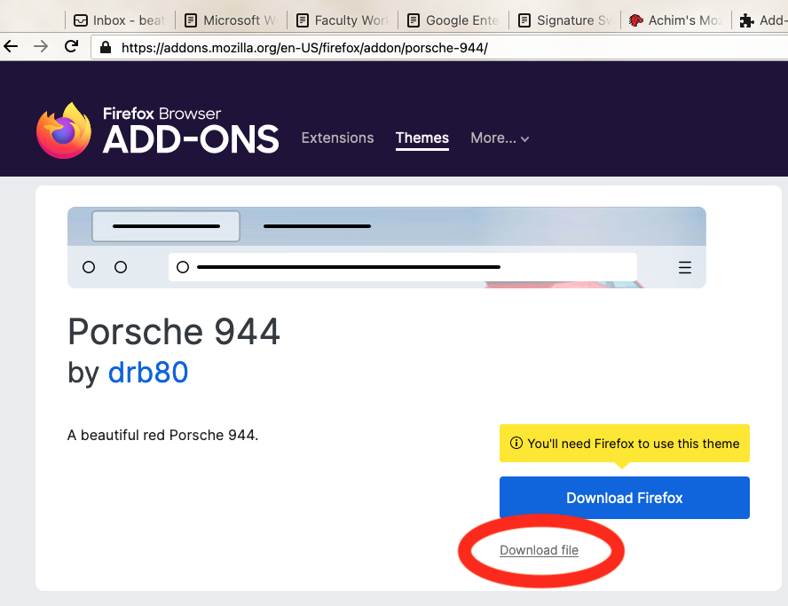
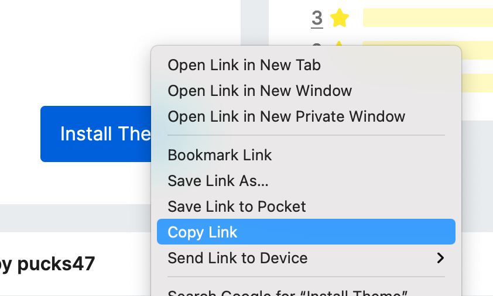
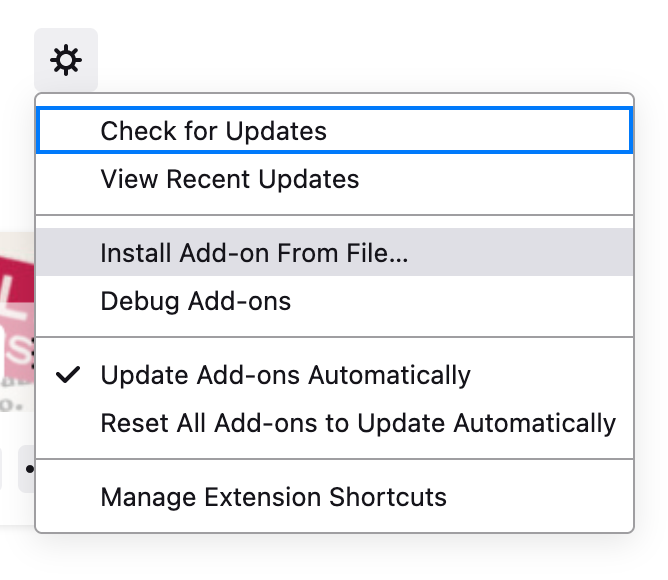

Easily switch between themes in Firefox and Thunderbird. This extension allows you to switch between themes via keyboard combinations or every N minutes. It also allows one to specify switching to a random next theme. Autoswitching and having Thematic on the tools menu is not supported in Thunderbird.
This is a re-implementation of personaswitcher that was developed for Firefox 4.
For Thunderbird, there are at least two way to use Firefox's themes.
Install https://addons.thunderbird.net/en-us/thunderbird/addon/browseintab/ in Thunderbird and then surf to the Firefix theme URL you like. It will say "Download Firefox" but you don't need to do that. Instead, click on "Download file". Thunderbird will automagically recognize the file as a theme and install it for you.

Another approach is to find the FireFox theme you want and right-click on the Install Theme. Choose Copy Link and use another program to download the file locally. Curl, wget, or even another browser will do the trick.

In Thunderbird, go to Tools -> Extensions and Themes. Click the settings icon and choose Install Add-on From File…

Click on the .xpi you downloaded and you should be good to go. It appears that Thunderbird currently doesn't notify Thematic of the new theme, so a restart is in order.